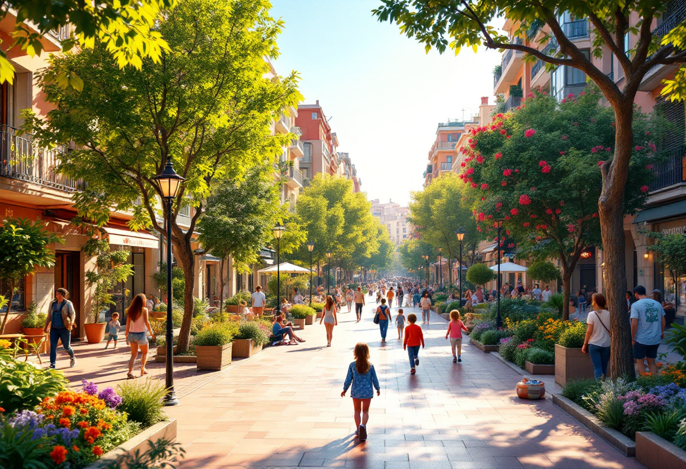

Objectif
Présenter des solutions concrètes pour atténuer les ICU.
🌳 Végétalisation urbaine
- Toitures végétalisées : Réduction de la température de surface jusqu'à 25°C
- Murs végétaux : Isolation thermique réduisant la dépendance à la climatisation
- Espaces verts : Favorisent l'évapotranspiration et créent des zones de fraîcheur
💧 Gestion de l'eau
- Sols perméables : Réduction du ruissellement et amélioration de l'infiltration
- Présence d'eau : Fontaines, bassins, brumisateurs pour rafraîchir l'air
🏙️ Urbanisme et architecture
- Matériaux réfléchissants : Revêtements clairs pour les toits et routes
- Design urbain : Favoriser la circulation d'air et l'ombrage naturel
🌍 Exemples de solutions mises en place dans différentes villes
-

Superblocks de Barcelone
Des quartiers sans voitures où la vie sociale et la verdure remplacent le bitume.
-

Gardens by the Bay, Singapour
Forêt verticale artificielle régulant naturellement sa température.
-

Bains du Port, Copenhague
Intégration de l'eau dans l'espace urbain pour rafraîchir la ville.
💡 Proposez votre propre solution !
Vous avez une idée pour rafraîchir la ville ? Partagez-la avec nous :